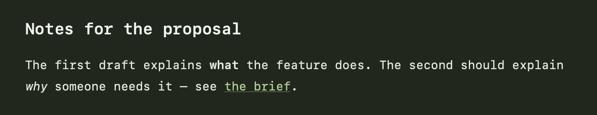
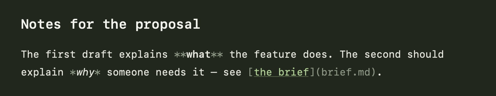
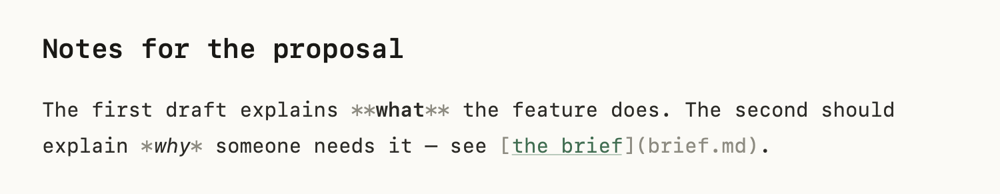
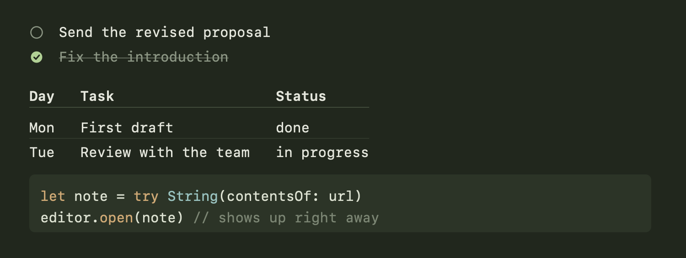

<title>Meadow</title>
<meta name="claude:viewport-fit-sides" content="cover">
<meta name="description" content="Meadow is a native Markdown notes editor for macOS: plain .md files, live preview, a third-of-a-second launch.">
<link rel="preconnect" href="https://fonts.googleapis.com">
<link rel="preconnect" href="https://fonts.gstatic.com" crossorigin>
<link rel="stylesheet" href="https://fonts.googleapis.com/css2?family=Onest:wght@400;500;600;700&family=JetBrains+Mono:wght@400;500;700&display=swap">
<style>
/* Layout: editorial single column, product screenshot as the hero, then feature rows and the benchmark sheet. */
:root {
  --bg: #f5f6f0;
  --bg-2: #ebeee4;
  --surface: #ffffff;
  --fg: #1b2217;
  --muted: #646e5d;
  --rule: #dae0d1;
  --accent: #3b7a2a;
  --accent-ink: #ffffff;
  --accent-soft: #e2eed9;
  --bar: #c6cebd;
  --loss: #9a5b1f;
  --glow: rgba(59, 122, 42, .16);
  --show-dark: none;
  --show-light: block;
  --font-text: "Onest", -apple-system, "Segoe UI", sans-serif;
  --font-mono: "JetBrains Mono", ui-monospace, "SF Mono", Menlo, monospace;
}
@media (prefers-color-scheme: dark) {
  :root:not([data-theme="light"]) {
    --bg: #141a12; --bg-2: #1a2117; --surface: #1e261b; --fg: #e5e9dd; --muted: #8e9987; --rule: #2f3a2a;
    --accent: #a9d18e; --accent-ink: #15200f; --accent-soft: #263521; --bar: #3b4835; --loss: #e0a96a;
    --glow: rgba(169, 209, 142, .14); --show-dark: block; --show-light: none; color-scheme: dark;
  }
}
:root[data-theme="dark"] {
  --bg: #141a12; --bg-2: #1a2117; --surface: #1e261b; --fg: #e5e9dd; --muted: #8e9987; --rule: #2f3a2a;
  --accent: #a9d18e; --accent-ink: #15200f; --accent-soft: #263521; --bar: #3b4835; --loss: #e0a96a;
  --glow: rgba(169, 209, 142, .14); --show-dark: block; --show-light: none; color-scheme: dark;
}
* { box-sizing: border-box; }
html { scroll-behavior: smooth; }
@media (prefers-reduced-motion: reduce) { html { scroll-behavior: auto; } }
body {
  background: var(--bg); color: var(--fg); font-family: var(--font-text); font-size: 16px; line-height: 1.55;
  margin: 0;
}
.gutter { padding-left: max(20px, env(safe-area-inset-left, 0px)); padding-right: max(20px, env(safe-area-inset-right, 0px)); }
.col { max-width: 1080px; margin: 0 auto; }
.narrow { max-width: 760px; margin: 0 auto; }
a { color: inherit; }
:focus-visible { outline: 2px solid var(--accent); outline-offset: 3px; border-radius: 6px; }

/* Nav */
nav { padding-block: 18px; }
nav .col { display: flex; align-items: center; justify-content: space-between; gap: 16px; }
.brand { display: flex; align-items: center; gap: 10px; font-weight: 600; text-decoration: none; font-size: 17px; }
.brand img { width: 30px; height: 30px; }
.navlinks { display: flex; gap: 22px; font-size: 14.5px; color: var(--muted); }
.navlinks a { text-decoration: none; }
.navlinks a:hover { color: var(--fg); }

/* Hero */
.hero { padding-block: 56px 24px; }
.hero .col { display: flex; flex-direction: column; gap: 22px; }
.eyebrow { font-family: var(--font-mono); font-size: 13px; color: var(--accent); letter-spacing: .02em; }
h1 {
  font-family: var(--font-mono); font-weight: 700; font-size: clamp(40px, 8vw, 76px); line-height: 1.02;
  letter-spacing: -.035em; margin: 0; max-width: 14ch; text-wrap: balance;
}
h1 .mark { color: var(--muted); font-weight: 500; }
.sub { font-size: clamp(17px, 2.2vw, 20px); color: var(--muted); max-width: 56ch; margin: 0; text-wrap: pretty; }
.sub b { color: var(--fg); font-weight: 600; }
.ctas { display: flex; flex-wrap: wrap; gap: 12px; align-items: center; }
.btn {
  display: inline-flex; align-items: center; gap: 10px; padding: 12px 18px; border-radius: 10px; font-weight: 600;
  text-decoration: none; font-size: 15.5px; border: 1px solid var(--rule); background: var(--surface);
}
.btn.primary { background: var(--accent); color: var(--accent-ink); border-color: transparent; }
.btn svg { width: 18px; height: 18px; fill: currentColor; }
.meta { font-family: var(--font-mono); font-size: 13px; color: var(--muted); display: flex; flex-wrap: wrap; gap: 6px 18px; }

.shot { position: relative; margin-top: 30px; }
.shot::before {
  content: ""; position: absolute; inset: 8% 6% 0; background: radial-gradient(60% 60% at 50% 40%, var(--glow), transparent 70%);
  filter: blur(30px); z-index: 0;
}
.shot img { position: relative; z-index: 1; width: 100%; height: auto; display: block; }
img.only-dark { display: var(--show-dark) !important; }
img.only-light { display: var(--show-light) !important; }

/* Feature rows */
section { padding-block: 72px; }
.section-head { display: flex; flex-direction: column; gap: 10px; margin-bottom: 36px; }
h2 { font-size: clamp(28px, 4.2vw, 40px); line-height: 1.12; margin: 0; letter-spacing: -.02em; text-wrap: balance; font-weight: 700; }
.lead { color: var(--muted); max-width: 60ch; margin: 0; font-size: 17px; }
.feature { display: grid; grid-template-columns: minmax(0, 5fr) minmax(0, 7fr); gap: 40px; align-items: center; padding-block: 34px; border-top: 1px solid var(--rule); }
.feature:first-of-type { border-top: 0; }
.feature h3 { font-size: 22px; margin: 0 0 10px; letter-spacing: -.01em; }
.feature p { margin: 0; color: var(--muted); }
.feature p + p { margin-top: 10px; }
.feature code, .install code { font-family: var(--font-mono); font-size: .88em; background: var(--bg-2); padding: 1px 6px; border-radius: 5px; color: var(--fg); }
.frame { background: var(--surface); border: 1px solid var(--rule); border-radius: 14px; overflow: hidden; min-width: 0; }
.frame img { display: block; width: 100%; height: auto; }

.toggle { display: inline-flex; border: 1px solid var(--rule); border-radius: 9px; padding: 3px; gap: 3px; background: var(--bg-2); margin-top: 16px; }
.toggle button {
  font: inherit; font-size: 13.5px; border: 0; background: transparent; color: var(--muted); padding: 6px 12px; border-radius: 7px; cursor: pointer;
}
.toggle button[aria-pressed="true"] { background: var(--surface); color: var(--fg); box-shadow: 0 1px 2px rgba(0,0,0,.08); }
.reveal { position: relative; }
.reveal img { transition: opacity .25s ease; }
.reveal img.on { position: absolute; top: 0; left: 0; opacity: 0; }
.reveal.raw img.on { opacity: 1; }
.reveal.raw img.off { opacity: 0; }

.files { font-family: var(--font-mono); font-size: 13.5px; padding: 18px 20px; display: grid; grid-template-columns: 1fr auto; gap: 7px 20px; }
.files .h { color: var(--muted); font-size: 12px; border-bottom: 1px solid var(--rule); padding-bottom: 8px; }
.files .s { color: var(--muted); text-align: right; font-variant-numeric: tabular-nums; }
.files .sel { color: var(--accent); }

/* Benchmarks */
#speed { background: var(--bg-2); border-block: 1px solid var(--rule); }
.cards { display: flex; flex-direction: column; gap: 18px; }
.card { background: var(--surface); border: 1px solid var(--rule); border-radius: 14px; padding: 22px 22px 18px; display: flex; flex-direction: column; gap: 14px; min-width: 0; }
.card-top { display: flex; justify-content: space-between; align-items: baseline; gap: 12px; flex-wrap: wrap; }
.card h3 { font-size: 17px; margin: 0; font-weight: 600; }
.detail { color: var(--muted); font-size: 13.5px; margin: -8px 0 0; }
.rank { font-family: var(--font-mono); font-size: 12px; padding: 2px 8px; border-radius: 6px; background: var(--accent-soft); color: var(--accent); white-space: nowrap; }
.rank.low { background: transparent; border: 1px solid var(--rule); color: var(--muted); }
.headline { display: flex; flex-direction: column; gap: 2px; }
.big { font-family: var(--font-mono); font-weight: 700; font-size: clamp(34px, 7vw, 46px); line-height: 1; letter-spacing: -.03em; color: var(--accent); }
.big.loss { color: var(--loss); }
.big small { font-family: var(--font-text); font-size: 17px; font-weight: 500; color: var(--fg); letter-spacing: 0; margin-left: 8px; }
.second { color: var(--muted); font-size: 14px; }
.bars { display: grid; grid-template-columns: minmax(96px, max-content) minmax(0, 1fr) minmax(84px, max-content); gap: 7px 12px; align-items: center; }
.bars .name { font-size: 13.5px; white-space: nowrap; overflow: hidden; text-overflow: ellipsis; }
.bars .name.me { font-weight: 600; }
.track { height: 12px; border-radius: 4px; position: relative; min-width: 0; }
.fill { position: absolute; inset: 0 auto 0 0; border-radius: 4px; background: var(--bar); min-width: 3px; }
.fill.me { background: var(--accent); }
.val { font-family: var(--font-mono); font-size: 13px; text-align: right; font-variant-numeric: tabular-nums; white-space: nowrap; }
.val.na { color: var(--muted); font-family: var(--font-text); font-size: 12.5px; text-align: left; white-space: normal; grid-column: 2 / 4; }
.foot { font-size: 12.5px; color: var(--muted); border-top: 1px solid var(--rule); padding-top: 10px; display: flex; flex-wrap: wrap; gap: 4px 14px; }
.notes { font-size: 12.5px; color: var(--muted); margin: -6px 0 0; padding-left: 18px; }
.lineup { display: flex; flex-wrap: wrap; gap: 8px; }
.chip { font-size: 13px; border: 1px solid var(--rule); border-radius: 999px; padding: 3px 10px; color: var(--muted); background: var(--surface); }
.chip b { color: var(--fg); font-weight: 600; }
.chip.me { border-color: var(--accent); background: var(--accent-soft); }
.summary { display: grid; grid-template-columns: repeat(3, minmax(0, 1fr)); gap: 14px; margin-bottom: 24px; }
.stat { background: var(--surface); border: 1px solid var(--rule); border-radius: 14px; padding: 18px; display: flex; flex-direction: column; gap: 4px; }
.stat .n { font-family: var(--font-mono); font-weight: 700; font-size: 30px; letter-spacing: -.03em; color: var(--accent); }
.stat .l { font-size: 13.5px; color: var(--muted); }
.method { margin-top: 28px; color: var(--muted); font-size: 14px; }
.method summary { cursor: pointer; color: var(--fg); font-weight: 600; font-size: 15px; }
.method ul { padding-left: 18px; display: flex; flex-direction: column; gap: 6px; margin: 12px 0 0; max-width: 72ch; }
.method code { font-family: var(--font-mono); font-size: 12.5px; }

/* Install */
.install { display: grid; grid-template-columns: repeat(3, minmax(0, 1fr)); gap: 16px; }
.step { background: var(--surface); border: 1px solid var(--rule); border-radius: 14px; padding: 20px; display: flex; flex-direction: column; gap: 10px; min-width: 0; }
.step .k { font-family: var(--font-mono); font-size: 12px; color: var(--accent); }
.step h3 { margin: 0; font-size: 17px; }
.step p { margin: 0; color: var(--muted); font-size: 14.5px; }
.cmd { display: flex; align-items: center; gap: 8px; background: var(--bg-2); border-radius: 8px; padding: 8px 8px 8px 12px; font-family: var(--font-mono); font-size: 12.5px; min-width: 0; }
.cmd span { overflow-x: auto; white-space: nowrap; flex: 1; min-width: 0; }
.cmd button { font: inherit; font-size: 12px; border: 1px solid var(--rule); background: var(--surface); color: var(--fg); border-radius: 6px; padding: 3px 8px; cursor: pointer; flex: none; }

footer { padding-block: 40px 56px; color: var(--muted); font-size: 14px; }
footer .col { display: flex; flex-wrap: wrap; justify-content: space-between; gap: 12px; border-top: 1px solid var(--rule); padding-top: 24px; }

@media (max-width: 820px) {
  .feature { grid-template-columns: 1fr; gap: 22px; }
  .install, .summary { grid-template-columns: 1fr; }
  .navlinks { display: none; }
}
@media (max-width: 480px) {
  .bars { grid-template-columns: minmax(78px, max-content) minmax(0, 1fr) minmax(68px, max-content); }
  .card { padding: 18px 16px 14px; }
}
/* Stack */
.stackline { display: flex; flex-wrap: wrap; gap: 8px; margin-bottom: 28px; }
.stackline span { font-family: var(--font-mono); font-size: 13px; padding: 5px 11px; border-radius: 8px; background: var(--surface); border: 1px solid var(--rule); }
.stackline span b { color: var(--accent); font-weight: 600; }
.why { display: grid; grid-template-columns: repeat(2, minmax(0, 1fr)); gap: 16px; }
.choice { background: var(--surface); border: 1px solid var(--rule); border-radius: 14px; padding: 22px; display: flex; flex-direction: column; gap: 8px; min-width: 0; }
.choice .pick { font-family: var(--font-mono); font-size: 12.5px; color: var(--accent); }
.choice h3 { margin: 0; font-size: 18px; letter-spacing: -.01em; }
.choice p { margin: 0; color: var(--muted); font-size: 15px; }
.choice code { font-family: var(--font-mono); font-size: .88em; background: var(--bg-2); padding: 1px 6px; border-radius: 5px; color: var(--fg); }
.choice.wide { grid-column: 1 / -1; }
.loc { display: grid; grid-template-columns: repeat(3, minmax(0, 1fr)); gap: 12px; margin-top: 4px; }
.loc div { display: flex; flex-direction: column; gap: 2px; }
.loc .n { font-family: var(--font-mono); font-weight: 700; font-size: 26px; letter-spacing: -.03em; color: var(--fg); }
.loc .l { font-size: 13px; color: var(--muted); }
@media (max-width: 820px) { .why { grid-template-columns: 1fr; } }
@media (max-width: 480px) { .loc { grid-template-columns: 1fr; } }
</style>

<nav class="gutter">
  <div class="col">
    <a class="brand" href="#top">Meadow</a>
    <div class="navlinks"><a href="#how">How it works</a><a href="#stack">Stack</a><a href="#speed">Speed</a><a href="#install">Install</a><a href="https://github.com/gerasimoph/meadow">GitHub</a></div>
  </div>
</nav>

<header class="hero gutter" id="top">
  <div class="col">
    <div class="eyebrow">A Markdown editor for macOS</div>
    <h1>Notes, <span class="mark">and</span> nothing else.</h1>
    <p class="sub">Meadow opens a folder of plain <b>.md</b> files and shows them as finished text: headings, tasks, tables, code. Markdown shows up only on the line you're editing. It launches <b id="hero-launch">in a third of a second</b>.</p>
    <div class="ctas">
      <a class="btn primary" href="https://github.com/gerasimoph/meadow"><svg viewBox="0 0 16 16" aria-hidden="true"><path d="M8 0C3.58 0 0 3.58 0 8c0 3.54 2.29 6.53 5.47 7.59.4.07.55-.17.55-.38 0-.19-.01-.82-.01-1.49-2.01.37-2.53-.49-2.69-.94-.09-.23-.48-.94-.82-1.13-.28-.15-.68-.52-.01-.53.63-.01 1.08.58 1.23.82.72 1.21 1.87.87 2.33.66.07-.52.28-.87.51-1.07-1.78-.2-3.64-.89-3.64-3.95 0-.87.31-1.59.82-2.15-.08-.2-.36-1.02.08-2.12 0 0 .67-.21 2.2.82.64-.18 1.32-.27 2-.27.68 0 1.36.09 2 .27 1.53-1.04 2.2-.82 2.2-.82.44 1.1.16 1.92.08 2.12.51.56.82 1.27.82 2.15 0 3.07-1.87 3.75-3.65 3.95.29.25.54.73.54 1.48 0 1.07-.01 1.93-.01 2.2 0 .21.15.46.55.38A8.013 8.013 0 0016 8c0-4.42-3.58-8-8-8z"/></svg>View on GitHub</a>
      <a class="btn" href="#speed">See the benchmarks</a>
    </div>
    <div class="meta"><span>Swift + AppKit</span><span>no web view</span><span>4 MB</span><span>macOS 14+</span><span>MIT</span></div>
    <div class="shot">
      
      
    </div>
  </div>
</header>

<section class="gutter" id="how">
  <div class="col">
    <div class="section-head">
      <div class="eyebrow">How it works</div>
      <h2>Your files stay files</h2>
      <p class="lead">The editor always holds the raw Markdown. Meadow converts nothing and keeps no database: everything you see is styling on top of the text.</p>
    </div>

    <div class="feature">
      <div>
        <h3>Markdown hides until you need it</h3>
        <p>Heading hashes, asterisks and link brackets stay out of sight. Put the cursor in a paragraph and it shows its source so you can edit it. Move away and it's clean again.</p>
        <div class="toggle" role="group" aria-label="Cursor position">
          <button type="button" id="cursor-out" aria-pressed="true">Cursor elsewhere</button>
          <button type="button" id="cursor-in" aria-pressed="false">Cursor in the paragraph</button>
        </div>
      </div>
      <div class="frame reveal" id="reveal">
        
        
        
        
      </div>
    </div>

    <div class="feature">
      <div>
        <h3>Tasks and tables look like a document</h3>
        <p><code>- [ ]</code> items become circles you tick with a click. Tables line up in columns even when the source is ragged. Code blocks are highlighted for about twenty languages.</p>
        <p>Return continues a list, Tab nests it, and ⌘B, ⌘I and ⌘K do what you expect.</p>
      </div>
      <div class="frame">
        
        
      </div>
    </div>

    <div class="feature">
      <div>
        <h3>A folder, not a vault</h3>
        <p>Open any folder and the sidebar shows its notes and subfolders as they are. Edits save themselves half a second after you stop typing, and changes from other apps appear right away.</p>
        <p>Keep the same files in git, sync them with iCloud, or open them in Obsidian.</p>
      </div>
      <div class="frame files" aria-label="Contents of the Weekly notes folder">
        <div class="h">Weekly notes</div><div class="h">size</div>
        <div>Archive/</div><div class="s">—</div>
        <div>brief.md</div><div class="s">43 B</div>
        <div>budget.md</div><div class="s">49 B</div>
        <div>groceries.md</div><div class="s">40 B</div>
        <div>ideas.md</div><div class="s">44 B</div>
        <div>reading-list.md</div><div class="s">75 B</div>
        <div>vienna-trip.md</div><div class="s">38 B</div>
        <div class="sel">weekly.md</div><div class="s sel">753 B</div>
      </div>
    </div>

    <div class="feature">
      <div>
        <h3>Press Space in Finder</h3>
        <p>The Quick Look extension renders .md files the same way the editor does, with tasks, tables and highlighting. Peek into a note without opening anything.</p>
      </div>
      <div class="frame"></div>
    </div>
  </div>
</section>

<section class="gutter" id="stack">
  <div class="col">
    <div class="section-head">
      <div class="eyebrow">Under the hood</div>
      <h2>What it's built with, and why</h2>
      <p class="lead">The goal was simple, light and fast. Every choice below follows from that, and the benchmarks further down are how we checked it.</p>
    </div>
    <div class="stackline" aria-label="Technology stack">
      <span><b>Swift</b> 5</span><span><b>AppKit</b></span><span><b>TextKit</b> 1</span><span><b>cmark-gfm</b></span><span><b>FSEvents</b></span><span><b>Quick Look</b> extension</span><span><b>XcodeGen</b></span>
    </div>
    <div class="why">
      <article class="choice">
        <div class="pick">Swift + AppKit</div>
        <h3>Native, not a web view</h3>
        <p>A web view brings a whole browser engine along: the two Electron apps in the benchmarks use 860 MB to 1.3 GB of memory and take up to 2 s to draw a note. AppKit gives native windows, the sidebar, text rendering, Quick Look and VoiceOver for free. The whole app is 4 MB and opens in about 0.3 s.</p>
      </article>
      <article class="choice">
        <div class="pick">Not Rust</div>
        <h3>The bottleneck isn't the parser</h3>
        <p>Rust was on the table. But cmark parses a 42 KB note in 3 ms; the time goes to launching and drawing text, which AppKit already does natively. Rust GUI toolkits don't look or behave like macOS, and Tauri is a web view again. Rust would pay off only for a Windows and Linux version.</p>
      </article>
      <article class="choice">
        <div class="pick">TextKit 1 + NSTextView</div>
        <h3>The text you edit is the file</h3>
        <p>The editor holds raw Markdown and never converts it. Styling is text attributes; hidden markers, task circles and aligned tables are glyph-level tricks in a custom layout manager. TextKit 1 exposes exactly those hooks and lays out long files lazily.</p>
      </article>
      <article class="choice">
        <div class="pick">cmark-gfm</div>
        <h3>The parser GitHub uses</h3>
        <p>CommonMark plus GitHub tables, tasks and strikethrough, through Apple's <code>swift-cmark</code> package. It's the only dependency. Where cmark reports wrong positions (setext headings, tables after a paragraph), Meadow checks the marker characters in the text before trusting them.</p>
      </article>
      <article class="choice wide">
        <div class="pick">Incremental styling</div>
        <h3>Only the blocks you touch are restyled</h3>
        <p>Each edit reparses the note, then restyles from the changed block to the first point where the old and new structure agree again. A fuzz test makes thousands of random edits and checks that the result matches styling the whole note from scratch.</p>
        <div class="loc">
          <div><span class="n">2,573</span><span class="l">lines in the editor engine</span></div>
          <div><span class="n">1,320</span><span class="l">lines in the app and Quick Look</span></div>
          <div><span class="n">1</span><span class="l">dependency: cmark-gfm</span></div>
        </div>
      </article>
    </div>
  </div>
</section>

<section class="gutter" id="speed">
  <div class="narrow">
    <div class="section-head">
      <div class="eyebrow" id="speed-eyebrow">Measured before release</div>
      <h2>Speed</h2>
      <p class="lead">Meadow against the editors already installed on the test Mac: Antigravity IDE (the default app for .md files there), Xcode, TextEdit and Obsidian. Every app is quit before each run and opens the same note, the way a double-click in Finder does.</p>
      <div class="lineup" id="lineup"></div>
    </div>
    <div class="summary" id="summary"></div>
    <div class="cards" id="cards"></div>
    <details class="method" id="method"></details>
  </div>
</section>

<section class="gutter" id="install">
  <div class="col">
    <div class="section-head">
      <div class="eyebrow">Install</div>
      <h2>Build it in a couple of minutes</h2>
      <p class="lead">There's no signed download yet, so Meadow builds from source. You'll need Xcode and XcodeGen.</p>
    </div>
    <div class="install">
      <div class="step">
        <div class="k">1</div>
        <h3>Tools</h3>
        <p>Xcode from the App Store, XcodeGen from Homebrew.</p>
        <div class="cmd"><span>brew install xcodegen</span><button type="button" data-copy="brew install xcodegen">Copy</button></div>
      </div>
      <div class="step">
        <div class="k">2</div>
        <h3>Source</h3>
        <p>Clone the repository.</p>
        <div class="cmd"><span>git clone https://github.com/gerasimoph/meadow</span><button type="button" data-copy="git clone https://github.com/gerasimoph/meadow">Copy</button></div>
      </div>
      <div class="step">
        <div class="k">3</div>
        <h3>Build</h3>
        <p>The script builds a Release copy into Applications. Set your own development team in project.yml for signing.</p>
        <div class="cmd"><span>cd meadow && ./scripts/install.sh</span><button type="button" data-copy="cd meadow && ./scripts/install.sh">Copy</button></div>
      </div>
    </div>
  </div>
</section>

<footer class="gutter">
  <div class="col">
    <span>Meadow · MIT · Swift, AppKit and cmark-gfm</span>
    <a href="https://github.com/gerasimoph/meadow">github.com/gerasimoph/meadow</a>
  </div>
</footer>
<script>
const DATA = {"metrics": [{"id": "launch", "title": "Cold launch → window on screen", "detail": "A 1 KB note opened from Finder while the app is closed", "unit": "ms", "digits": 0, "verb": "faster than", "anti": "slower than", "rows": [{"app": "Meadow", "value": 311.31356954574585, "runs": 10, "note": null}, {"app": "TextEdit", "value": 313.5530352592468, "runs": 10, "note": null}, {"app": "Antigravity IDE", "value": 912.1960401535034, "runs": 10, "note": null}, {"app": "Xcode", "value": 2911.527991294861, "runs": 10, "note": null}, {"app": "Obsidian", "value": 376.8065571784973, "runs": 8, "note": "opens its own vault, not the file it was given"}, {"app": "Logseq", "value": null, "note": "was open during the run, not measured"}]}, {"id": "painted", "title": "Cold launch → note painted", "detail": "Until the window stops changing: the frame after which nothing moves for 1.5 s", "unit": "ms", "digits": 0, "verb": "faster than", "anti": "slower than", "rows": [{"app": "Meadow", "value": 424.6309995651245, "runs": 7, "note": null}, {"app": "TextEdit", "value": 525.2429246902466, "runs": 7, "note": null}, {"app": "Antigravity IDE", "value": 2133.342981338501, "runs": 6, "note": null}, {"app": "Xcode", "value": 3267.122983932495, "runs": 6, "note": null}, {"app": "Obsidian", "value": 937.4285340309143, "runs": 6, "note": "opens its own vault, not the file it was given"}, {"app": "Logseq", "value": null, "note": "was open during the run, not measured"}]}, {"id": "large", "title": "1 MB note: cold launch → painted", "detail": "The same measurement with a 1 MB, 30,000-line note", "unit": "ms", "digits": 0, "verb": "faster than", "anti": "slower than", "rows": [{"app": "Meadow", "value": 662.147045135498, "runs": 5, "note": null}, {"app": "TextEdit", "value": 525.738000869751, "runs": 5, "note": null}, {"app": "Antigravity IDE", "value": 2209.5829248428345, "runs": 5, "note": null}, {"app": "Xcode", "value": 6015.303015708923, "runs": 5, "note": null}, {"app": "Obsidian", "value": null, "note": "can't open a standalone file"}, {"app": "Logseq", "value": null, "note": "was open during the run, not measured"}]}, {"id": "memory", "title": "Memory with a note open", "detail": "phys_footprint of every process the app owns (helpers, renderers, WebKit), 5 s after launch", "unit": "MB", "digits": 0, "verb": "less memory than", "anti": "more memory than", "rows": [{"app": "Meadow", "value": 46.70452117919922, "runs": 5, "note": null}, {"app": "TextEdit", "value": 64.76811981201172, "runs": 5, "note": null}, {"app": "Antigravity IDE", "value": 1333.6695022583008, "runs": 5, "note": null}, {"app": "Xcode", "value": 330.16455841064453, "runs": 5, "note": null}, {"app": "Obsidian", "value": 855.9937591552734, "runs": 3, "note": "opens its own vault, not the file it was given"}, {"app": "Logseq", "value": null, "note": "was open during the run, not measured"}]}, {"id": "cpu", "title": "Idle CPU", "detail": "Window in view, no input, 10 s; share of one core", "unit": "%", "digits": 2, "verb": "less CPU than", "anti": "more CPU than", "rows": [{"app": "Meadow", "value": 0.0901126093350371, "runs": 5, "note": null}, {"app": "TextEdit", "value": 0.07032412594972426, "runs": 5, "note": null}, {"app": "Antigravity IDE", "value": 13.011293045021274, "runs": 5, "note": null}, {"app": "Xcode", "value": 3.3444116004939324, "runs": 5, "note": null}, {"app": "Obsidian", "value": 2.9168346825579694, "runs": 3, "note": "opens its own vault, not the file it was given"}, {"app": "Logseq", "value": null, "note": "was open during the run, not measured"}]}, {"id": "wakeups", "title": "Idle wakeups", "detail": "Interrupts that wake the CPU, over the same 10 s", "unit": "/s", "digits": 1, "verb": "fewer wakeups than", "anti": "more wakeups than", "rows": [{"app": "Meadow", "value": 1.2998453097852756, "runs": 5, "note": null}, {"app": "TextEdit", "value": 1.9997500255254785, "runs": 5, "note": null}, {"app": "Antigravity IDE", "value": 308.5513377113981, "runs": 5, "note": null}, {"app": "Xcode", "value": 187.4457345049089, "runs": 5, "note": null}, {"app": "Obsidian", "value": 42.08258625585898, "runs": 3, "note": "opens its own vault, not the file it was given"}, {"app": "Logseq", "value": null, "note": "was open during the run, not measured"}]}, {"id": "size", "title": "App size", "detail": "Disk space taken by the .app bundle", "unit": "MB", "digits": 0, "verb": "smaller than", "anti": "larger than", "rows": [{"app": "Meadow", "value": 4.263936, "runs": 1, "note": null}, {"app": "TextEdit", "value": 0.925696, "runs": 1, "note": "system app: its frameworks ship with macOS and are not counted"}, {"app": "Antigravity IDE", "value": 633.810944, "runs": 1, "note": null}, {"app": "Xcode", "value": 4212.707328, "runs": 1, "note": null}, {"app": "Obsidian", "value": 539.508736, "runs": 1, "note": null}, {"app": "Logseq", "value": 541.097984, "runs": 1, "note": null}]}], "apps": [{"name": "Meadow", "version": "0.1.0", "skipped": null}, {"name": "TextEdit", "version": "1.21", "skipped": null}, {"name": "Antigravity IDE", "version": "2.7.0", "skipped": null}, {"name": "Xcode", "version": "27.2", "skipped": null}, {"name": "Obsidian", "version": "1.13.7", "skipped": null}, {"name": "Logseq", "version": "0.10.15", "skipped": "was already running"}], "runs": {"small": 10, "idle": 5, "large": 5}, "keys": [{"label": "1 KB note", "median": 0.34, "p95": 0.98}, {"label": "42 KB note", "median": 1.18, "p95": 1.79}, {"label": "1 MB note", "median": 26.07, "p95": 27.16}], "machine": {"date": "Nov 22, 2026", "hardware": "MacBook Pro (Mac16,8), Apple M4 Pro, 14 cores, 48 GB", "hardwareShort": "MacBook Pro, M4 Pro", "os": "27.2.1 (26B131)"}};
const ME = "Meadow";
const RIVAL = "Antigravity IDE";

// Live-preview toggle.
(function () {
  const box = document.getElementById("reveal");
  const out = document.getElementById("cursor-out"), inn = document.getElementById("cursor-in");
  function set(raw) {
    box.classList.toggle("raw", raw);
    out.setAttribute("aria-pressed", String(!raw));
    inn.setAttribute("aria-pressed", String(raw));
  }
  out.addEventListener("click", () => set(false));
  inn.addEventListener("click", () => set(true));
})();

// Copy buttons.
document.querySelectorAll("[data-copy]").forEach(b => b.addEventListener("click", () => {
  const text = b.getAttribute("data-copy");
  const done = () => { b.textContent = "Copied"; setTimeout(() => b.textContent = "Copy", 1500); };
  if (navigator.clipboard && navigator.clipboard.writeText) {
    navigator.clipboard.writeText(text).then(done, () => select(b));
  } else select(b);
}));
function select(b) {
  const span = b.previousElementSibling;
  const r = document.createRange(); r.selectNodeContents(span);
  const s = getSelection(); s.removeAllRanges(); s.addRange(r);
}

// Benchmarks.
const nf = (v, d) => v.toLocaleString("en-US", { minimumFractionDigits: d, maximumFractionDigits: d });
const ratioText = (r) => r >= 1.5 ? nf(r, r >= 10 ? 0 : 1) + "×" : nf((r - 1) * 100, 0) + "%";
const esc = (s) => String(s).replace(/[&<>"]/g, c => ({ "&": "&amp;", "<": "&lt;", ">": "&gt;", '"': "&quot;" }[c]));

function compare(me, other) {
  if (!me || !other || me.value == null || other.value == null) return null;
  if (me.value === 0 && other.value === 0) return { win: true, ratio: 1, text: "even" };
  if (me.value <= other.value) {
    const r = me.value === 0 ? Infinity : other.value / me.value;
    return { win: true, ratio: r, text: r === Infinity ? "∞" : ratioText(r) };
  }
  return { win: false, ratio: me.value / other.value, text: ratioText(me.value / other.value) };
}

function card(m) {
  const rows = m.rows;
  const valued = rows.filter(r => r.value != null).sort((a, b) => a.value - b.value);
  const me = rows.find(r => r.app === ME);
  const rank = valued.findIndex(r => r.app === ME) + 1;
  const rival = rows.find(r => r.app === RIVAL && r.value != null) || valued.find(r => r.app !== ME);
  const best = valued.filter(r => r.app !== ME && r !== rival)[0];
  const max = Math.max(...valued.map(r => r.value), 1e-9);
  let headline = "";
  const c1 = compare(me, rival);
  if (c1) headline += `<div class="big ${c1.win ? "" : "loss"}">${c1.text}<small>${c1.win ? m.verb : m.anti} ${esc(rival.app)}</small></div>`;
  const c2 = compare(me, best);
  if (c2) headline += `<div class="second">${c2.text} ${c2.win ? m.verb : m.anti} ${esc(best.app)}</div>`;
  const order = [...valued, ...rows.filter(r => r.value == null)];
  const bars = order.map(r => {
    const isMe = r.app === ME;
    if (r.value == null) return `<div class="name ${isMe ? "me" : ""}">${esc(r.app)}</div><div class="val na">— ${esc(r.note || "no data")}</div>`;
    const pct = Math.max(0.6, r.value / max * 100);
    return `<div class="name ${isMe ? "me" : ""}">${esc(r.app)}</div><div class="track"><div class="fill ${isMe ? "me" : ""}" style="width:${pct}%"></div></div><div class="val">${nf(r.value, m.digits)} ${m.unit}</div>`;
  }).join("");
  const notes = rows.filter(r => r.value != null && r.note).map(r => `<li>${esc(r.app)}: ${esc(r.note)}</li>`).join("");
  const counts = rows.filter(r => r.value != null).map(r => r.runs || 0);
  const lo = Math.min(...counts), hi = Math.max(...counts);
  const runsText = hi <= 1 ? "single measurement" : "median of " + (lo === hi ? hi : lo + "–" + hi) + " runs";
  return `<article class="card" id="m-${m.id}">
    <div class="card-top"><h3>${esc(m.title)}</h3>${rank ? `<span class="rank ${rank > 1 ? "low" : ""}">${ME} · ${rank} of ${valued.length}</span>` : ""}</div>
    <p class="detail">${esc(m.detail)}</p>
    <div class="headline">${headline}</div>
    <div class="bars">${bars}</div>
    ${notes ? `<ul class="notes">${notes}</ul>` : ""}
    <div class="foot"><span>${m.unit}, lower is better</span><span>${runsText}</span></div>
  </article>`;
}

function keysCard(k) {
  const max = Math.max(...k.map(r => r.median));
  const bars = k.map(r => `<div class="name">${esc(r.label)}</div><div class="track"><div class="fill me" style="width:${Math.max(0.6, r.median / max * 100)}%"></div></div><div class="val">${nf(r.median, 2)} ms</div>`).join("");
  const p95 = k.map(r => `<span>${esc(r.label)}: p95 ${nf(r.p95, 2)} ms</span>`).join("");
  return `<article class="card" id="m-keys">
    <div class="card-top"><h3>Keystroke → text restyled</h3><span class="rank low">Meadow only</span></div>
    <p class="detail">Insert a character, reparse the document, restyle the changed blocks and lay out the visible part. Measured inside the app, without keyboard or display latency.</p>
    <div class="headline"><div class="big">${nf(k[0].median, 2)}<small>ms on a typical note</small></div><div class="second">a frame at 120 Hz lasts 8.3 ms</div></div>
    <div class="bars">${bars}</div>
    <div class="foot"><span>ms, lower is better</span><span>median of 300 keystrokes</span>${p95}</div>
  </article>`;
}

(function render() {
  const d = DATA;
  if (!d) return;
  const metric = id => d.metrics.find(m => m.id === id);
  const val = (id, app) => (metric(id).rows.find(r => r.app === app) || {}).value;
  const mc = d.machine;
  document.getElementById("speed-eyebrow").textContent = `Measured ${mc.date} · ${mc.hardwareShort}`;
  document.getElementById("lineup").innerHTML = d.apps.map(a =>
    `<span class="chip ${a.name === ME ? "me" : ""}"><b>${esc(a.name)}</b> ${esc(a.version)}${a.skipped ? " · skipped" : ""}</span>`).join("");
  const launch = val("launch", ME), mem = val("memory", ME), rivalMem = val("memory", RIVAL), paint = val("painted", ME);
  document.getElementById("hero-launch").textContent = `in ${nf(launch / 1000, 2)} seconds`;
  document.getElementById("summary").innerHTML = `
    <div class="stat"><span class="n">${nf(paint, 0)} ms</span><span class="l">from double-click to a finished note</span></div>
    <div class="stat"><span class="n">${nf(mem, 0)} MB</span><span class="l">of memory with a note open${rivalMem ? `, ${nf(rivalMem / mem, 0)}× less than Antigravity IDE` : ""}</span></div>
    <div class="stat"><span class="n">${nf(d.keys[0].median, 2)} ms</span><span class="l">to handle a keystroke</span></div>`;
  document.getElementById("cards").innerHTML = d.metrics.map(card).join("") + keysCard(d.keys);
  const skipped = d.apps.filter(a => a.skipped).map(a => a.name);
  document.getElementById("method").innerHTML = `
    <summary>How we measured</summary>
    <ul>
      <li>${esc(mc.hardware)}, macOS ${esc(mc.os)}. The usual background apps (terminal, browser, assistants) kept running, so the noise hits every app equally.</li>
      <li>Apps took turns run by run. Each app was quit before every run; the disk cache stayed warm.</li>
      <li>“Window on screen” is the first window at least 200 pt tall in the WindowServer list, polled every 2 ms. “Painted” is the last change of the window image (ScreenCaptureKit, about 30 ms per sample) after which the window stays still for 1.5 s. The blinking caret and the scroll bar don't count.</li>
      <li>Memory is phys_footprint of every process the app is responsible for (helpers and renderers for Electron apps), 5 s after launch. CPU and wakeups cover the next 10 s with no input.</li>
      <li>Antigravity IDE and Xcode show Markdown as source code and TextEdit as plain text, while Meadow renders headings, tasks and tables. Obsidian can't open a standalone file and loads its vault instead; two of its runs were dropped because the previous instance was still on screen.${skipped.length ? " " + esc(skipped.join(", ")) + " was in use during the run, so it was left alone and not measured." : ""}</li>
      <li>Runs: ${d.runs.small} for launch and paint, ${d.runs.idle} for memory and idle, ${d.runs.large} for the 1 MB note; every figure is a median. Code: <code>bench/AppBench.swift</code> and <code>Packages/MeadowKit/Sources/mdbench</code>.</li>
    </ul>`;
})();
</script>
